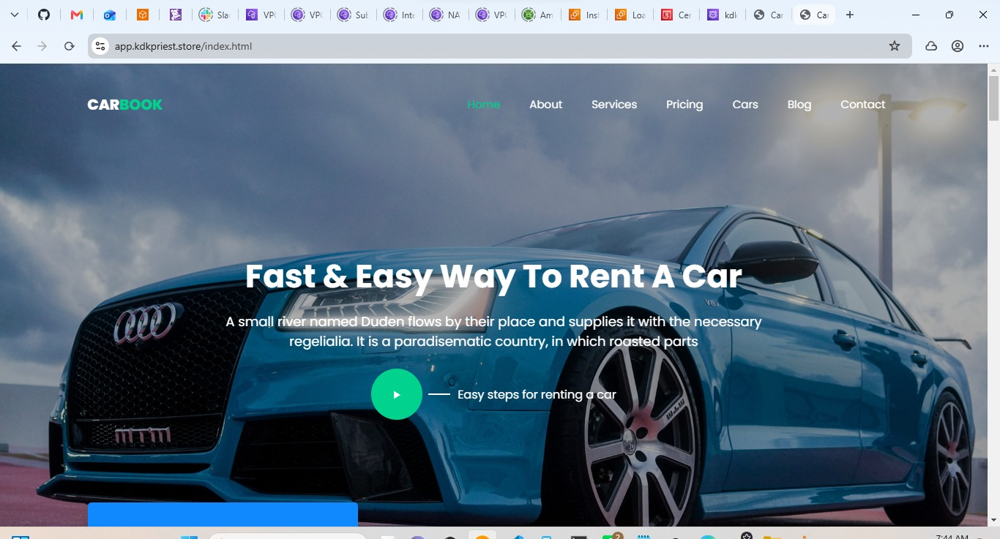
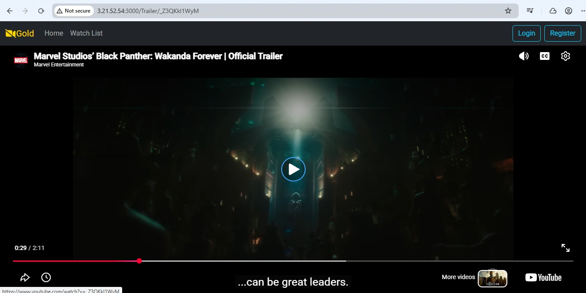
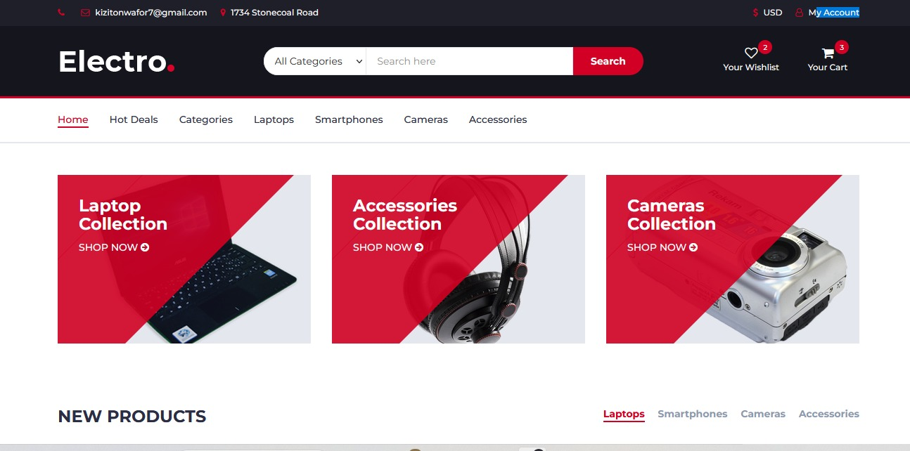

Website Design
Professional, responsive websites designed to help your business build trust, showcase your services, and reach customers online.
↗DIGITAL SERVICES FOR GROWING BUSINESSES
I help businesses build a professional online presence through website design, SEO, Google Business Profile setup, and affordable digital solutions.
Websites • SEO • Google Visibility • Digital Solutions
Professional websites and digital solutions for growing businesses.
WHAT I DO
Whether you need a website, better visibility on Google, or a simple way for customers to find and contact you, I can help you build the right online presence.
Professional, responsive websites designed to help your business build trust, showcase your services, and reach customers online.
↗Improve your website's visibility in search engines and help potential customers find your business when they search for your services.
↗Set up and optimize your business presence on Google so customers can find your location, services, contact details, reviews, and opening hours.
↗Focused landing pages built to promote a service, product, campaign, or special offer and turn visitors into potential customers.
↗If you're not sure where to start, I'll help you choose practical and affordable ways to establish your business online.
↗Keep your website updated, functional, and ready for your customers with ongoing improvements and basic maintenance.
↗Not sure what you need?
Let’s TalkA PRACTICAL PLACE TO BEGIN
That's okay. Your business can still have a professional online presence.
Every business has different needs and budgets. If a full website isn't the right starting point for you, I can help you begin with practical and affordable solutions that make it easier for customers to find and contact you.
Tell Me What You Need A friendly conversation, with no pressure.A SMART PLACE TO START
You don’t need a huge team or a huge budget to show up professionally. Get the right essentials, built around your priorities and ready to grow with you.
Let’s find your starting pointA considered plan. A real person. Progress you can feel.
PROJECTS & CASE STUDIES
A few projects I've built and worked on across cloud, websites, and digital solutions.

01 / 03Designed and deployed a highly available web application across multiple Availability Zones using AWS services including Application Load Balancer, EC2, Auto Scaling, EFS, NAT Gateway, Route 53 and ACM.
View Project
02 / 03Built a CI/CD workflow using GitHub Actions, Docker, Amazon ECR and Amazon EC2 to build, push and deploy a frontend and backend application.
View Project
03 / 03Deployed a static website on AWS using a custom VPC, EC2, Nginx, Route 53, security groups and a custom domain.
View ProjectTHE PERSON BEHIND NWAFOR DIGITAL
Hi, I'm Nwafor. I help businesses build a stronger online presence through website design, SEO, Google visibility, and practical digital solutions.
My approach is simple: understand what your business needs, build a solution that makes sense for your goals and budget, and make it easier for your customers to find and connect with you online.
Whether you're starting from scratch or looking to improve your existing online presence, I'm here to help you take the next step.
Let's Work TogetherA THOUGHTFUL WAY TO WORK
Every business is different. I focus on solutions that fit your actual needs instead of adding unnecessary complexity.
I take time to understand what you want to achieve and build the online solution around your business goals.
Your website should work well and look professional across phones, tablets and computers.
Need changes after your website goes live? I can help with updates, improvements and ongoing support.
Let’s build something that works for your business.
Chat With MeGOOD QUESTIONS
Helpful answers about getting your business online and choosing the right next step.
Have another question? Chat on WhatsApp ↗YOUR NEXT STEP STARTS HERE
Tell me what you’re working on. We’ll figure out the right next step together.
Chat With Me on WhatsApp Usually reply within one business day